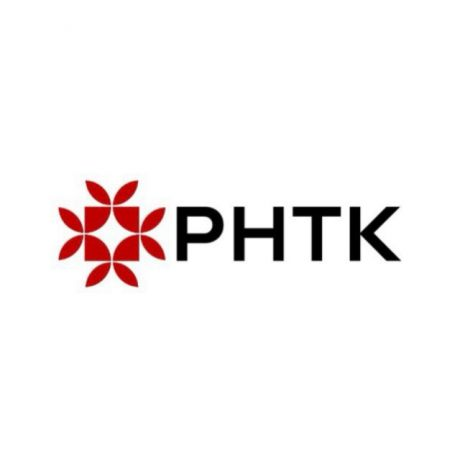

Материал компании

MITEX 2026 · Россия · Стенд 8F903
РНТК, ООО
Карточка проверена 10 ноября 2026, 09:25 · Источник ↗ · Снимок оригинальной карточки ↗
О компании
ООО РНТК — российская компания, объединяющая разработку, поставки и продвижение ручного строительного, слесарного и садово-огородного инструмента для профессионального и бытового применения. Мы создаём продукцию, которая помогает людям строить, ремонтировать, благоустраивать территории и реализовывать свои проекты с уверенностью в результате. Основой нашей работы являются качество, надёжность и постоянное развитие ассортимента в соответствии с потребностями российского рынка. За годы работы РНТК сформировала прочные партнёрские отношения с производственными предприятиями, торговыми организациями и дилерами, обеспечивая клиентов современным инструментом, отвечающим высоким требованиям к прочности, удобству и долговечности. ООО РНТК является эксклюзивным дистрибъютером немецкого бренда SPITZ– профессиональный измерительный инструмент, известный своей точностью, надёжностью и высоким качеством исполнения. SPITZ – специализируется на производстве измерительного и разметочного инструмента для профессионального применения. Два бренда — единый стандарт качества: - РНТК — бренд создан для тех, кто ценит практичность, надёжность и доступность. В ассортименте представлены востребованные решения для строительства, ремонта, хозяйственных и садовых работ. Каждый продукт разрабатывается с учётом реальных условий эксплуатации и потребностей российских пользователей. - ARVEXPRO ARVEXPRO — профессиональный бренд компании РНТК, ориентированный на специалистов строительной отрасли, производственных предприятий, коммунальных служб и профессиональных садоводов. Инструмент ARVEXPRO отличается повышенным ресурсом, эргономикой и использованием современных материалов, что обеспечивает высокую эффективность даже при интенсивных нагрузках.
Контакты
Все контактные сведения из карточки
Контакты Фактический адрес Телефон: +7(988)364-05-72 Адрес: 350018, Россия, Краснодарский край, Краснодар, ул Текстильная, д. 9/2 Веб-сайт: http://rntkinstrument.ru E-mail: info@rntk-i.ru Телефон: +7(988)364-05-72
Все рубрики участника
Зал
- Зал № 8
Участник выставки
- MITEX
Фотографии и изображения

Видео, каталоги и документы
Каталог продукции участника
Материалы каталога
Каталог
Каталог
Каталог Вложения SPITZ.pdf 30.09.2026 7 6.58 MB